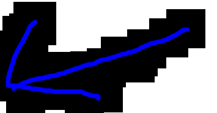
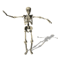
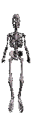

IF my WEB DEVELOPMENT teacher gonna SEES this WEBSITE he will FUCKING kill ME


Check out this silly game I made! It is actually just a programming joke, or more like gamedev joke because, just write "[game engine] begginer tutorial" and they will show you how to make simple platformer, flappy bird or any simple game, and that's really good beggining and by making this game I just wanted to finally (after few years) make proper game, FINISH IT IN 100% and publish it just to finally see whole process of making games. Now I'm making other game, hope I'm going to finish it soon too...
aaaaaaaaaaaaaaaaaaaaaaaa

